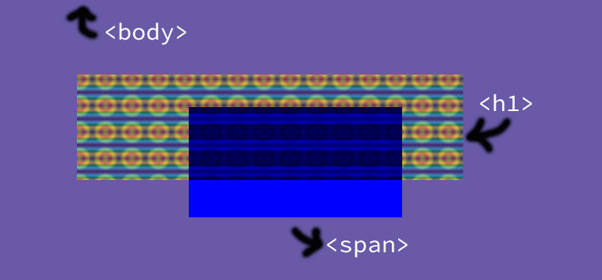

Filter Effects & Blend Modes
@divya • Product Manager, Adobe
Filter Effects
Creation of FX Task Force
Originally drafted 25 October 2012
Based on SVG Filters
Introduced by Apple.
Available since Chrome 18, Safari 6.
What is it?

Define the color of an output pixel based on calculations on input pixel color
What are filters?
h1 {
filter: blur(10px);
}
Wait, we have seen this before!
Box Shadows, Text Shadows
(But they are different)
What filters do we have?
- Built-in Filters
- SVG Filters
- Custom Filters
How do filters work?
Filters create a new stacking context
Stacking Context
Determines the paint order of elements (example) - Detailed explanation
Stacking Contexts determine which layers are accelerated
What does it mean?
Filters will be computed & applied by GPU on content that are also rendered via the GPU. (Demo)
When are filters applied?
Element gets rendered (with border, outline, box-shadows, border radius, etc (used as input image)
Filters apply
Clipping, Masking or Opacity
Color Calculations
Operate on premultiplied colors
Intermediate RGB values of RGBA colors are multiplied with the Alpha transparency to provide a smoother transition.
This looks familiar


Built-in Filters
Short-hand CSS reference for various image processing functions
List of Built-in Filters
- grayscale
- sepia
- saturate
- hue-rotate
- invert
- opacity
- brightness
- contrast
- blur
- drop-shadow
Hue Rotate
Rotates the color by a certain degree on the coolor wheel.

Drop Shadow
Blurred offset version of input's non-transparent areas
Box Shadow

Drop Shadow

Drop Shadow also uses gaussian blur instead of Triple box blur that Box shadow does.
Browser Support
Stable Chrome (all flavours), Safari (all flavours), Opera 15+
SVG Filters
All built-in filters have SVG Filter equivalents
E.g. Blur Filter
filter: blur([radius]);
<filter id="blur">
<feGaussianBlur stdDeviation="[radius radius]">
</filter>
Handy cheatsheet to make it work in Firefox!
Filter Primitives
Built-in filters described in terms of these Filter primitives
Advantages
- Input as CSS filter (Demo)
- More effects like morphing, diffuse lighting, specular lighting, etc.
- Chrome also hardware accelerates some SVG Filters
Browser Support
IE 10+ (unprefixed), Firefox (unprefixed), Chrome, Safari
Blend Modes
How Colors mix when source elemnt and backdrop overlap.
Note colors are blended without being pre-multiplied.
Source Element
Element on which the blend mode is specified.
h1 { mix-blend-mode: multiply; }
Backdrop
Content that is behind the element that it should composite with.
All the elements behind the source elements are composited (rendered into place) before applying the blend mode.
Stacking Context!
Backdrop only extends to current stacking context.
Each element using mix-blend-mode creates a new stacking context
What creates stacking context?
- Absolutely/Fixed positioned elements
- Opacity < 1
- Filters
- Overflow is set
- Transform is used.
What happens when blending within a stacking context?
The backdrop of the element creating the stacking context is considered transparent black.
What if you want this effect without specifying a stacking context?
isolation
h1 { isolation: isolate; }
Blend modes applied on element or descendants will assume transparent black as starting backdrop.
h1 {
isolation: isolate;
background: url(cir.png); }
h1 span {
mix-blend-mode: multiply; }

Isolation Defaults
- Backgrounds
- Images
(Demo)
Blend Modes in Canvas
globalCompositeOperation = '<blend-mode>';
Why do we need blend modes when we have filters?
- Filters cannot create similar effects
feBlendFilter primitive will use Blend Modes in the future.enableBackgroundattribute that allows primitive blend mode in SVG Filter primitives is not implemented in most browsers.